武士と鎌倉幕府
 いっしょに
いっしょに読もう！
武士の成長
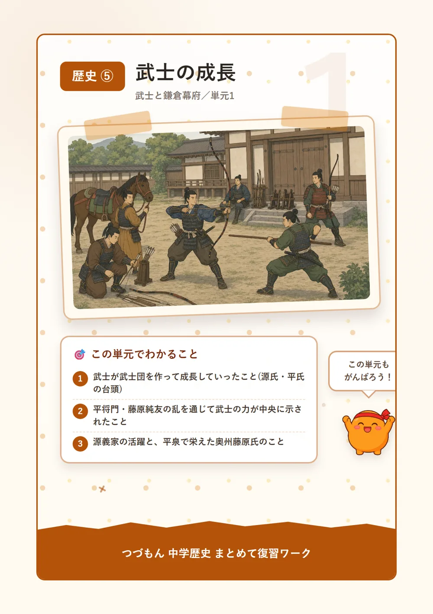
1武士の成長と武士団
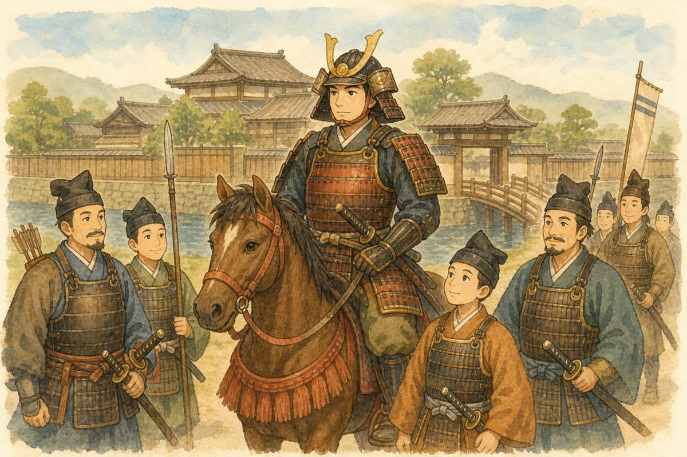
平安時代の中ごろ、地方の治安が乱れてくると、弓矢や馬の技にすぐれた地方の有力者や農民が武器を持つようになり、10世紀ごろから武士として成長していったんだ。武士は一族や家来を血縁と主従関係で結びつけて、武士団と呼ばれる軍事組織をつくっていったよ。その長である惣領は、土地の管理や戦の指揮、一族の争いの仲裁までこなしていたんだね。天皇の子孫である源氏は東日本を、平氏は西日本を中心に勢力を広げていき、やがて武士団の中心的な存在になっていったんだ。
2平将門・藤原純友の乱
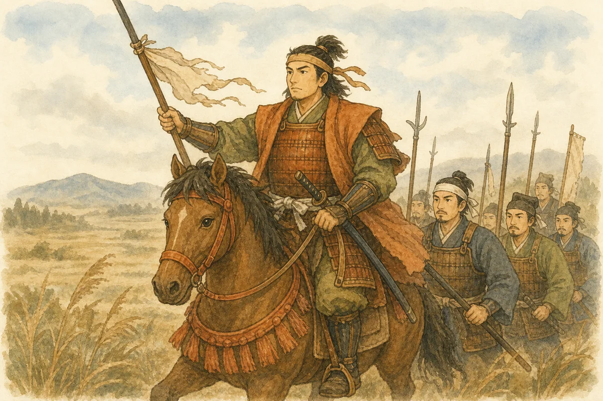
935年ごろ、関東で平将門が反乱を起こし、自ら「新皇」を名乗って独立した国を建てようとしたんだ。でも、朝廷側の武士にしずめられてしまったよ。ほぼ同じころの939年ごろには、瀬戸内海で藤原純友が海賊を率いて反乱を起こしているんだ。二つの反乱はどちらもしずめられたけれど、地方で育った武士の力が中央の貴族にもはっきりと示される出来事になったんだね。武士が政治の舞台に登場する前触れだったといえるよ。
3源義家と奥州藤原氏
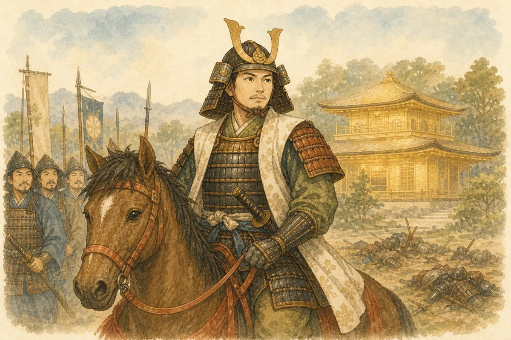
11世紀の後半、東北地方で起きた前九年合戦・後三年合戦では、源氏の武将源義家が活躍して戦乱をしずめたんだ。これで東日本の武士から厚い信頼を得ることになったんだね。同じころ東北では、金や馬の交易で富を築いた奥州藤原氏が平泉を拠点に約100年にもわたって栄えていたよ。金箔でおおわれた豪華な仏堂、中尊寺金色堂を建てたのもこの一族なんだ。すごいよね。この繁栄は、のちに源頼朝によってほろぼされるまで続いたんだよ。
4荘園の広がり
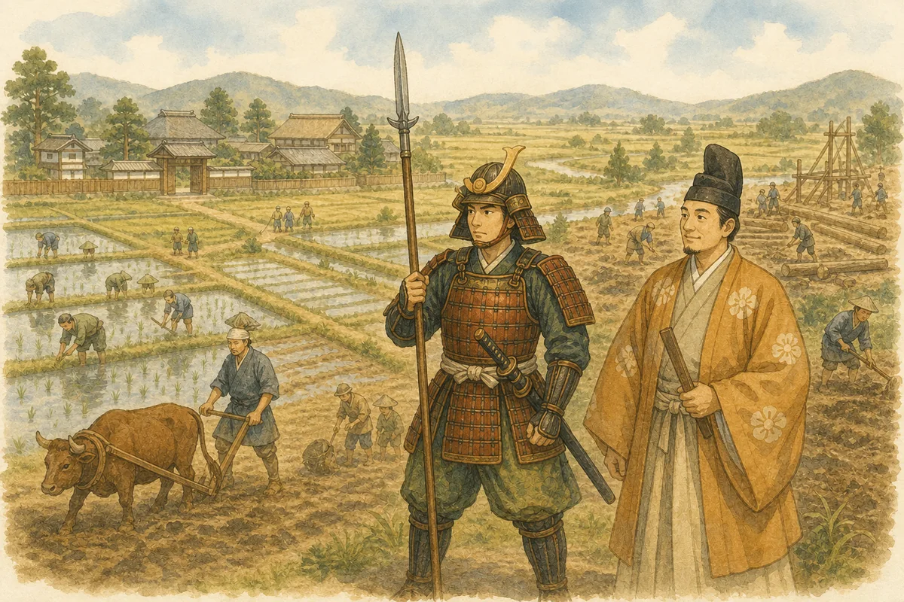
地方の開発領主は、開墾した土地の税をまぬがれるために、有力な貴族に土地を差し出す寄進を行ったんだ。それでいて現地の管理は自分で続けて、実質的な支配はしっかり保っていたんだね。こうして貴族や寺社が持つ私有地である荘園が各地に広がっていき、税が免除される不輸の権や、国司の役人の立ち入りを拒める不入の権を持つ荘園も増えていったよ。国司が支配する公領と荘園が並び立つ社会が、こうしてできあがっていったんだ。

院政と平氏の政治
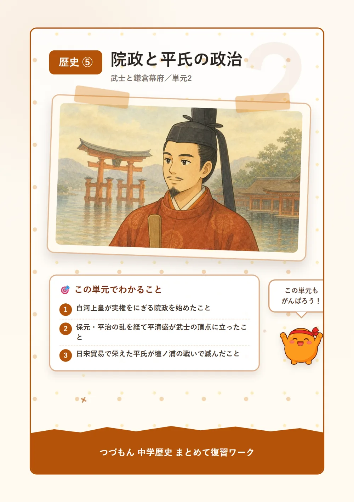
1白河上皇と院政の始まり
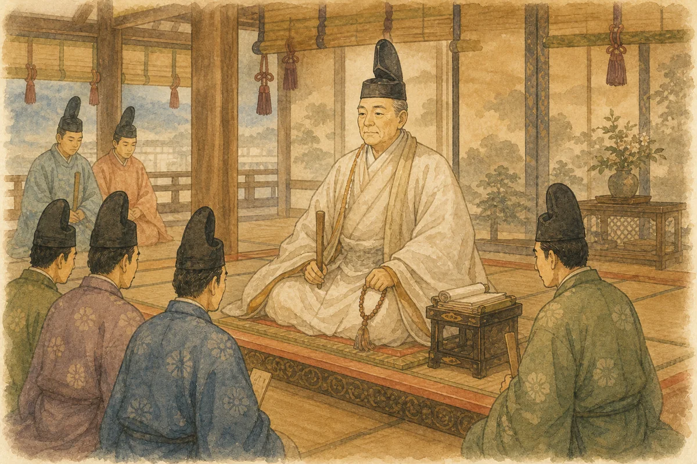
11世紀の後半、藤原氏による摂関政治に代わって、白河上皇は自ら実権をにぎる院政を始めたんだ。天皇の位を退いて上皇になることで、天皇としての決まりごとに縛られずに、自由に政治を動かせるようになったんだね。白河上皇は院の警備のために北面の武士を置いて、武士の力をうまく身近な形で利用したんだよ。この院政というしくみは、のちの上皇たちにもしっかり受け継がれていったんだ。
2保元の乱・平治の乱と平清盛
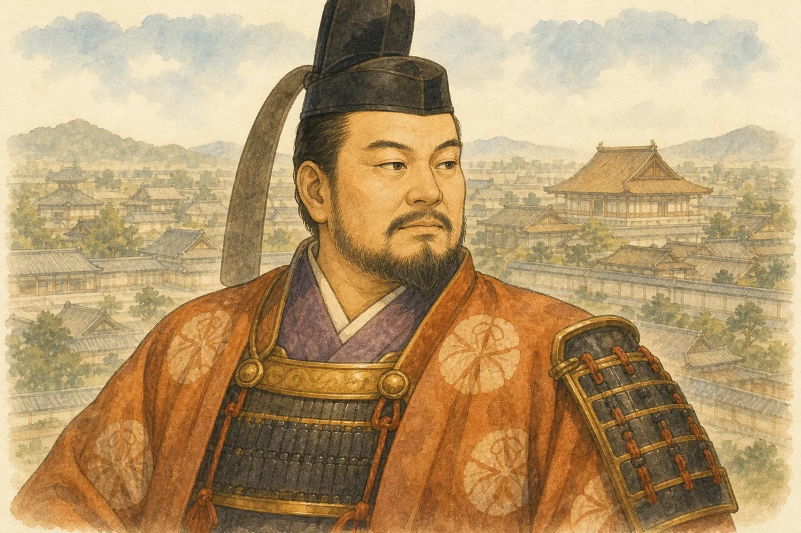
1156年、崇徳上皇と後白河天皇の対立から保元の乱が起こったんだ。源氏・平氏の武士が動員されたことで、武士の政治的な地位がぐっと高まったんだね。1159年の平治の乱では平清盛が源義朝をやぶり、平氏が武士の頂点に立ったよ。清盛は1167年、武士として初めて太政大臣という朝廷の最高位についたんだ。娘を天皇のきさきにするなど、一族で要職を独占していったんだね。
3日宋貿易と平氏の滅亡
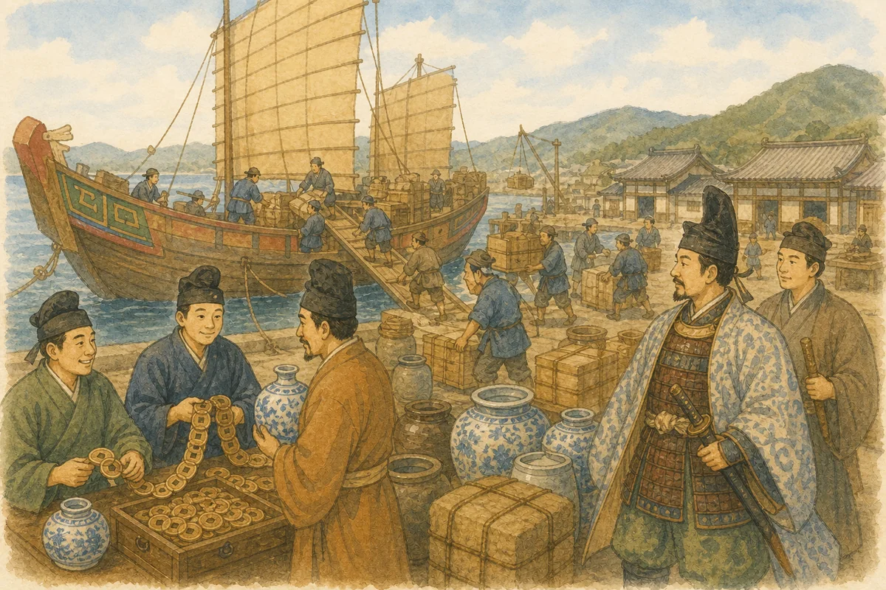
平清盛は大輪田泊(現在の兵庫県神戸市)を整備して日宋貿易を進め、宋銭や陶磁器を輸入して大きな利益を得たんだ。でも平氏が朝廷の要職や領地を一族で独占したことは、「平氏にあらずんば人にあらず」と言われるほどの反発を招いてしまったんだね。伊豆で挙兵した源頼朝は弟の源義経らを率いて平氏を追いつめていき、1185年の壇ノ浦の戦いでとうとう平氏をほろぼしたんだよ。
鎌倉幕府の成立
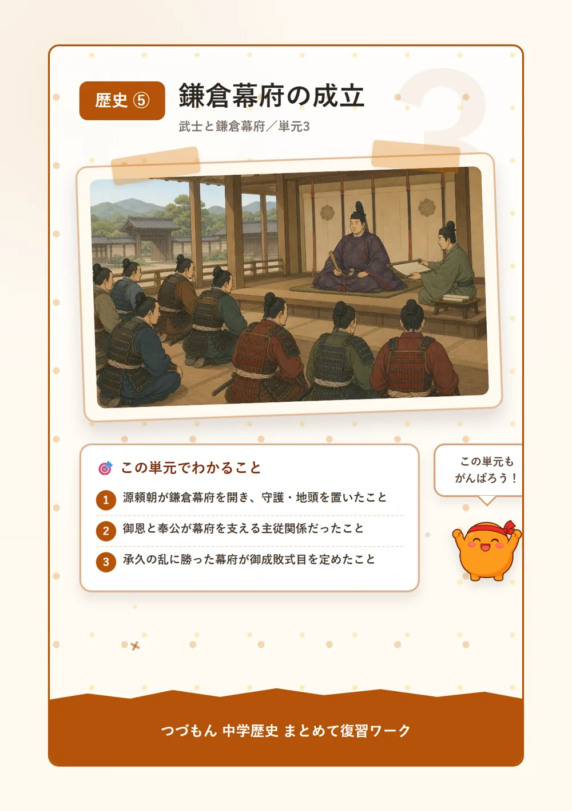
1源頼朝と鎌倉幕府の成立
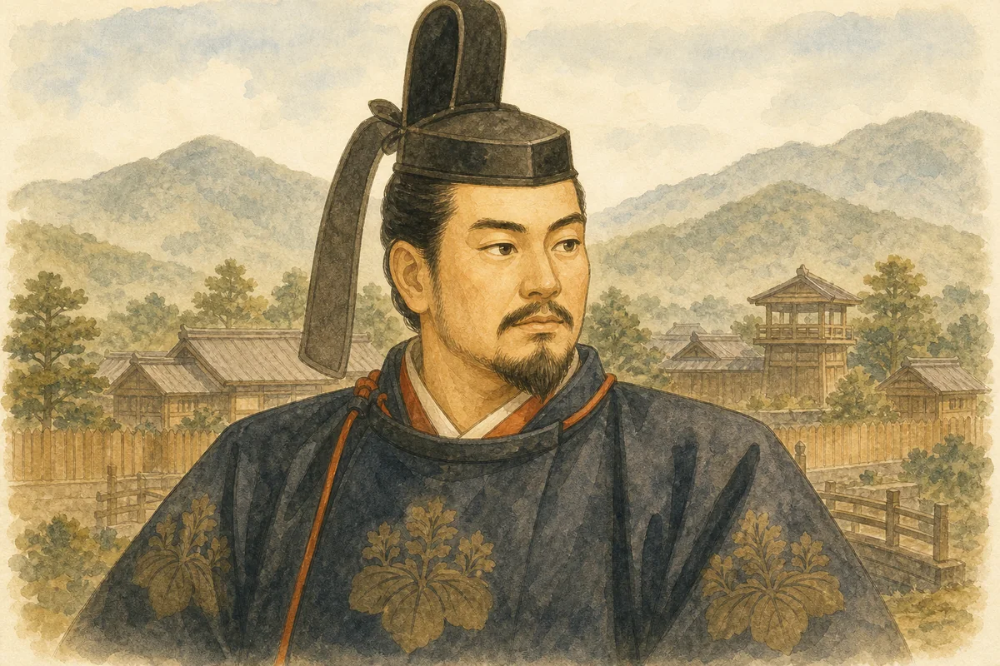
平氏をほろぼした源頼朝は、朝廷から征夷大将軍に任命されて、鎌倉を本拠地に日本で初めての武士の政権である鎌倉幕府を開いたんだ。頼朝は国ごとに軍事・警察を担う守護を、荘園や公領ごとに年貢の取り立てなどを行う地頭を置いて、全国の支配を固めていったんだね。こうして、貴族に代わって武士が政治を動かす時代が本格的に始まったんだよ。
2御恩と奉公のしくみ

将軍と主従関係を結んだ武士は御家人と呼ばれたんだ。将軍が御家人の領地を保護したり、新しい土地をあたえたりする御恩に対して、御家人は戦のときの軍役や京都・鎌倉の警護をつとめる奉公で応じる。この関係が鎌倉幕府の基礎になっていたんだね。このような土地を仲立ちとした主従関係は封建制度と呼ばれていて、ヨーロッパ中世の領主と騎士の関係ともよく似ているんだよ。おもしろいでしょ？
3承久の乱と御成敗式目
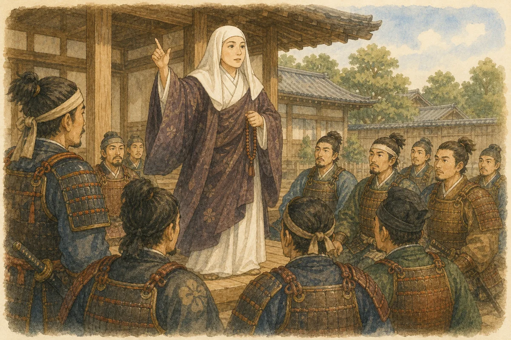
頼朝の死後は、妻の実家である北条氏が執権として実権をにぎるようになったんだ。1221年、後鳥羽上皇が幕府をたおそうと兵を挙げる承久の乱を起こしたけれど、北条政子が御家人の団結をうったえたこともあって、幕府側が勝利したんだよ。その後、京都には朝廷を監視する六波羅探題が置かれ、1232年には執権北条泰時が武士のならわしに基づく法である御成敗式目を定めたんだね。
鎌倉時代の社会
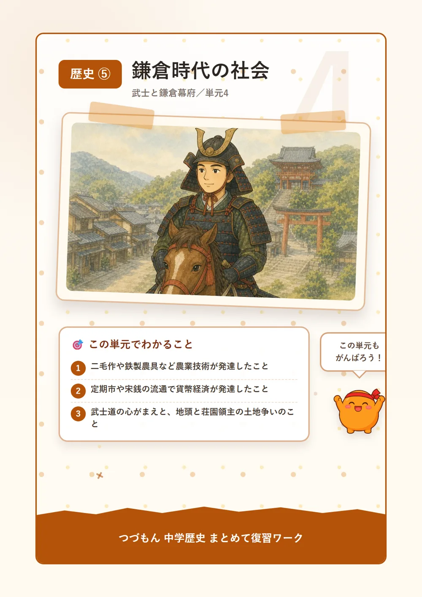
1農業の発達
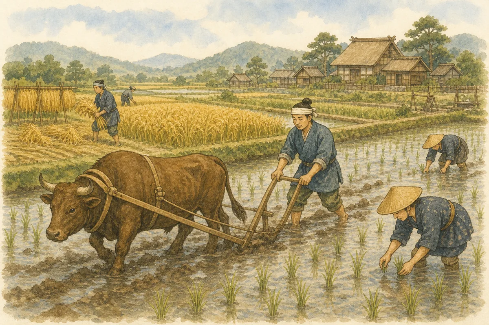
鎌倉時代には農業技術が大きく進んで、同じ田で秋に米、冬に麦を作る二毛作が西日本を中心に広まっていったんだ。木や石より硬く深く耕せる鉄製農具や、牛や馬を使って田を耕す牛馬耕、草木を焼いた灰を肥料として使う草木灰の利用も進んでいったよ。これらが組み合わさって、農業の収穫量はぐんと高まっていったんだね。
2商業の発達と貨幣経済
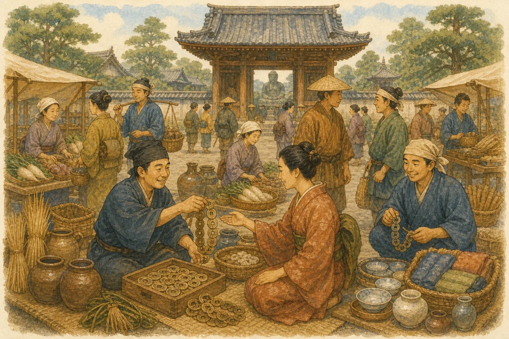
農業生産が高まると商業も発達していき、寺社の門前や交通の要所には月3回開かれる定期市(三斎市)が各地に広がっていったんだ。平清盛の日宋貿易で日本に大量に入ってきた宋銭は、売買だけでなく年貢の支払いにも使われるようになったよ。物々交換に代わってお金を使う貨幣経済が、こうして進んでいったんだね。商品を運ぶ運送業者である馬借も活躍したんだ。
3武士の暮らしと土地争い
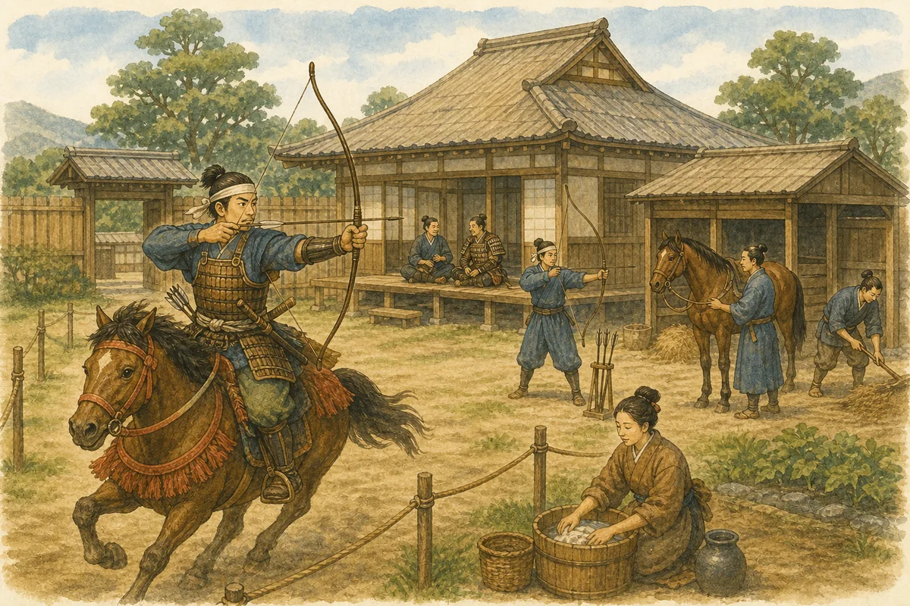
鎌倉時代の武士は、名誉を重んじはじをきらう武士道の心がまえを持っていたんだ。弓や馬の技を磨く弓馬の道を何より大切にして、一大事には「いざ鎌倉」と将軍のもとへ駆けつける覚悟を持っていたんだね。かっこいいよね。一方で、地頭が荘園で力を強めると荘園領主との土地争いが増えていき、土地を半分ずつ分け合う下地中分で解決することもあったんだよ。
鎌倉文化と新しい仏教
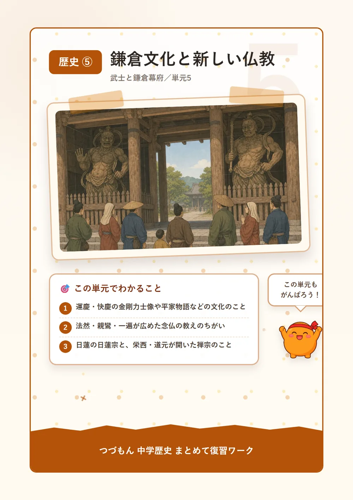
1力強い彫刻と文学
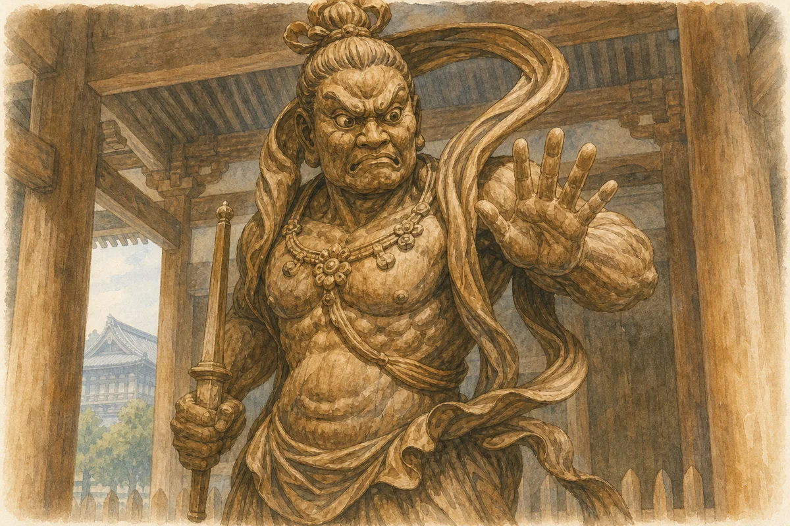
源平の争乱で焼けてしまった東大寺は、鎌倉時代に再建されたんだ。南大門には運慶・快慶らが手がけた写実的で力強い金剛力士像が置かれたよ。文学では、源平の争乱をえがき琵琶法師が語り伝えた軍記物語平家物語、鴨長明が世のはかなさを記した随筆「方丈記」、兼好法師が人々の暮らしをつづった随筆「徒然草」が生まれたんだね。後鳥羽上皇の命で藤原定家らが「新古今和歌集」を編集したのもこの時代なんだ。
2念仏の教え
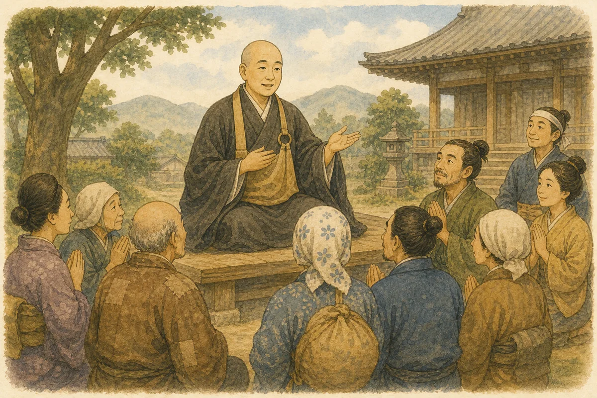
鎌倉時代には、だれにでも分かりやすい新しい仏教が広まっていったんだ。法然は「南無阿弥陀仏」と念仏を唱えれば誰でも救われると説いて、浄土宗を開いたよ。弟子の親鸞は、阿弥陀仏を信じる心があれば悪人こそ救われるという悪人正機を説いて浄土真宗を開いたんだね。一遍は踊りながら念仏を唱える踊念仏を広めて、時宗を開いたんだ。
3題目と禅宗
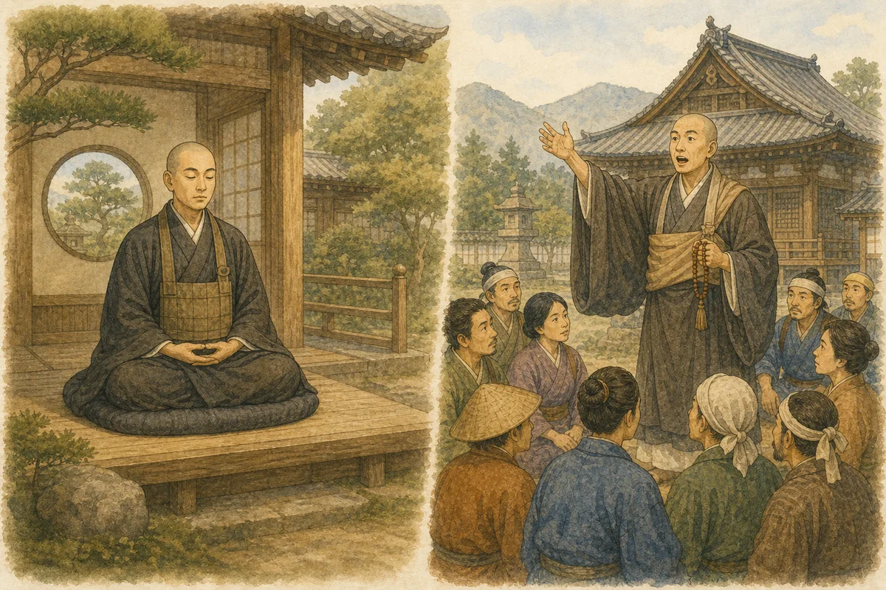
日蓮は法華経の題目「南無妙法蓮華経」を唱えることだけが正しい救いの道だと説いて、日蓮宗を開いたんだ。一方、宋に渡って学んだ栄西は座禅と問答を重んじる臨済宗を伝え、道元はひたすら座禅を行う(只管打坐)ことを説いて曹洞宗を開いたんだね。座禅による自力の修行を重んじる禅宗は、武士の精神にもぴったり合って、広く受け入れられていったんだよ。